Guida per gli operatori
Come usare l'app, passo dopo passo. I nomi dei pulsanti sono scritti tra «virgolette», come li vedi sul telefono.
1. Prima volta
La prima volta devi far riconoscere il tuo telefono e scegliere il tuo PIN. Poi entri ogni giorno solo con il PIN.
La prima volta l'app te la installa il responsabile.
- Apri l'app sul telefono.
- Se vedi «Telefono da autorizzare», il telefono non è ancora approvato.
- Comunica al responsabile il codice che vedi sullo schermo.
- Aspetta. La schermata si controlla da sola ogni pochi secondi. Puoi anche toccare «Ricontrolla».
- Quando il telefono è approvato, il responsabile può aprirti la scelta del PIN. Vedi «Ciao …, scegli il tuo PIN».
- Scrivi il PIN due volte: la seconda volta il titolo diventa «Ripeti il PIN».
- Se i due PIN sono diversi, vedi «I due PIN non coincidono, riprova». Ricomincia.
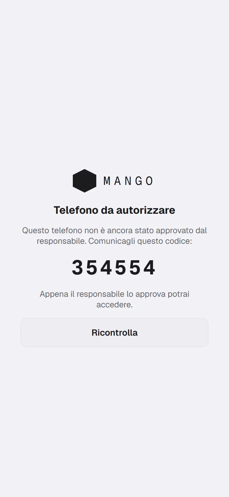
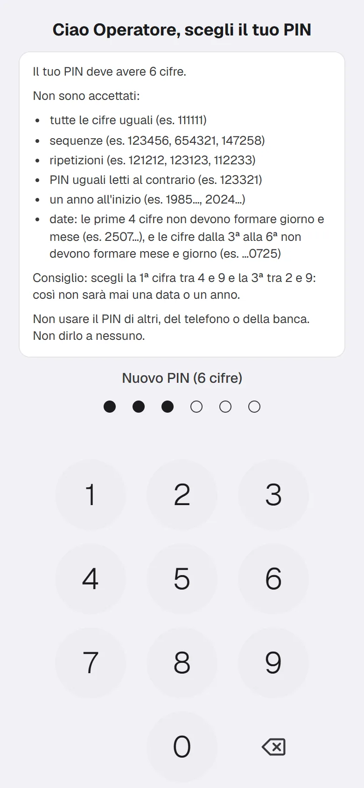
Regole del PIN
- Il PIN deve avere 6 cifre.
- Non sono accettati:
- tutte le cifre uguali (per esempio 111111);
- sequenze (per esempio 123456, 654321, 147258);
- ripetizioni (per esempio 121212, 123123, 112233);
- PIN uguali letti al contrario (per esempio 123321);
- un anno all'inizio (per esempio 1985…, 2024…);
- date: le prime 4 cifre non devono formare giorno e mese (per esempio 2507…), e le cifre dalla 3ª alla 6ª non devono formare mese e giorno (per esempio …0725).
- Consiglio: scegli la 1ª cifra tra 4 e 9 e la 3ª tra 2 e 9. Così non sarà mai una data o un anno.
- Non usare il PIN di altri, del telefono o della banca. Non dirlo a nessuno.
Cosa vedi dopo
Entri nell'app e vedi «Ciao, » seguito dal tuo nome.
Errori comuni
- «Questo PIN sembra una data, scegline un altro». Scegline uno che rispetti le regole sopra.
- «Questo PIN è una sequenza troppo facile».
- «La scelta del PIN non è più disponibile: rivolgiti al responsabile». Il tempo per sceglierlo è finito: chiedi al responsabile di riaprirlo.
- «Telefono non più autorizzato»: il telefono non può più entrare. Rivolgiti al responsabile.
- «Verifica non riuscita»: controlla la connessione e tocca «Ricontrolla».
2. Entrare e uscire
Entri con il tuo nome e il PIN. Esci quando lasci il telefono ad altri.
Per entrare
- Scegli il tuo nome dalla lista «Chi sei».
- Scrivi il PIN con il tastierino. L'app lo controlla quando hai scritto le cifre.
Per uscire
- In alto a destra tocca il tuo nome con l'icona del menu.
- Si apre il menu. In fondo ci sono «Guida» e «Esci».
- Tocca «Esci». L'app chiede «Vuoi uscire? Per rientrare servirà il PIN.»
- Conferma. Torni alla schermata di accesso.
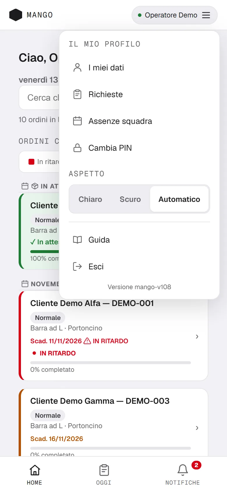
Poco dopo la fine del turno l'app ti fa uscire da sola: per rientrare usa il PIN.
In fondo al menu leggi «Versione …» con il numero della versione dell'app.
Errori comuni
- «PIN errato»: riprova con calma.
- «Troppi tentativi errati — riprova dopo le …»: aspetta l'ora indicata.
- «Seleziona il tuo nome»: prima scegli il nome, poi scrivi il PIN.
3. Home
La Home è la lista di tutti gli ordini aperti. Da qui apri un ordine per vedere le sue fasi e le sue foto.
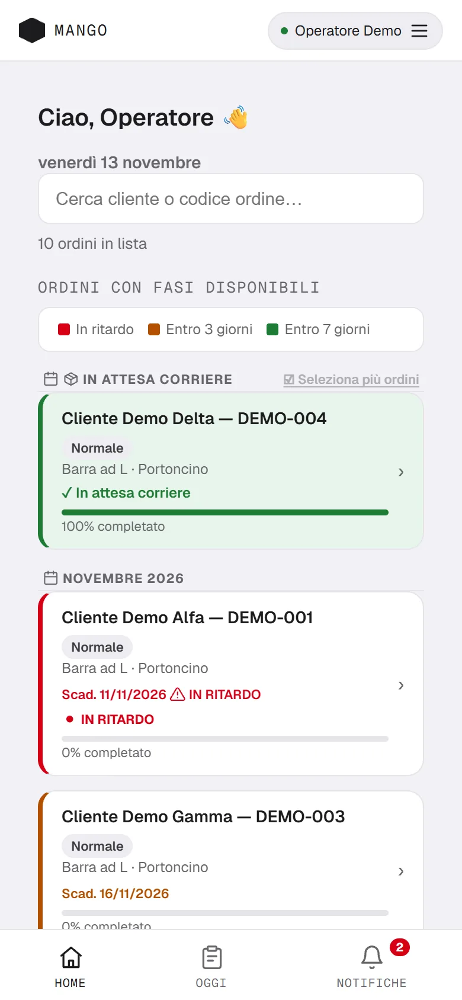
Cosa vedi
- In alto «Ciao, » con il tuo nome e la data di oggi.
- Il campo «Cerca cliente o codice ordine…».
- Il titolo «Ordini con fasi disponibili».
- Ogni ordine ha cliente, codice, scadenza, la priorità e una barra con la percentuale «% completato».
- Gli ordini sono divisi per mese di scadenza. Sotto «Senza scadenza» trovi quelli senza data.
- In cima c'è il gruppo «In attesa corriere»: sono gli ordini finiti, pronti da spedire o da ritirare.
- Un ordine in ritardo ha la scritta «IN RITARDO». Uno fermo dal responsabile ha «SOSPESO». Se non c'è niente da fare vedi «Nessuna fase disponibile».
- «Spedizione unica con …» ti dice quali altri ordini partono insieme a questo.
Aprire un ordine
- Scrivi nel campo di ricerca, se serve.
- Tocca la riga dell'ordine.
- Per tornare tocca «← Torna alla home».
«Da chiudere oggi» sta nella pagina «Oggi» (vedi sezione 4). Il materiale in arrivo si gestisce da «Ricevi materiale» (sezione 5).
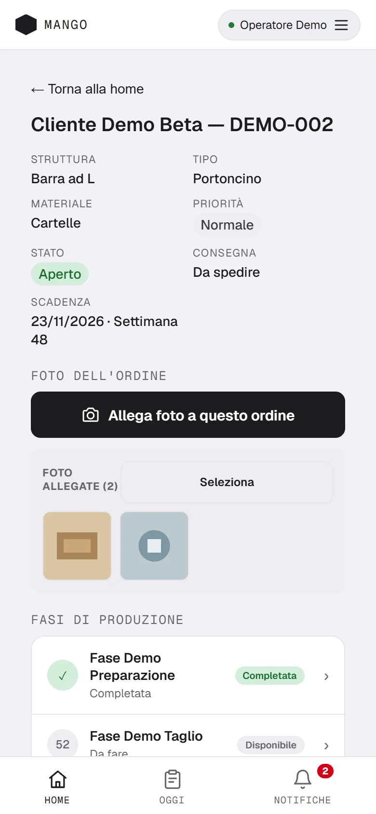
Errori comuni
- «Nessun ordine aperto»: non ci sono ordini in lista.
- «Nessun risultato»: la ricerca non trova niente. Cancella il testo.
4. Oggi
«Oggi» è il piano del giorno, uguale per tutta la squadra. Mostra cosa fare, raggruppato per fase.
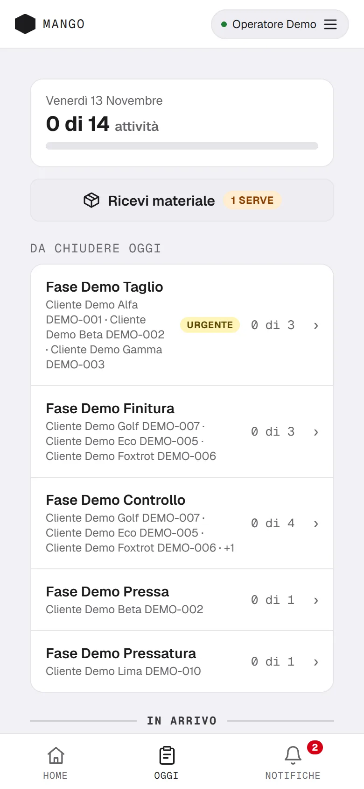
Cosa vedi
- In alto la data e quante attività sono fatte, per esempio «3 di 10 attività».
- Il pulsante «Ricevi materiale» (vedi sezione 5).
- Una lista di fasi. Ogni fase dice quante voci sono fatte, per esempio «1 di 3».
- Il gruppo «Da chiudere oggi» è in cima. Sono le fasi più urgenti, con i codici degli ordini.
- Sotto c'è «Altre fasi di oggi» (se non c'è «Da chiudere oggi», il titolo è «Fasi di oggi»).
- Più in basso c'è «In arrivo»: sono lavori che aspettano un'altra fase. Vedi «dopo: …» e non puoi ancora toccarli.
- La scritta «Urgente» segna ciò che serve subito.
- Se non c'è niente da fare vedi «Nessuna attività eseguibile adesso». Se il piano non c'è ancora, l'app te lo dice.
Completare una fase
- Tocca il nome della fase nella lista.
- Trovi le voci: cliente e codice dell'ordine, e quanti pezzi.
- Quando hai finito, tocca «✓ Completata» sulla voce.
- Vedi «Completata!». La voce diventa verde con «✓ Fatta».
- Per tornare alla lista tocca «← Tutte le fasi».
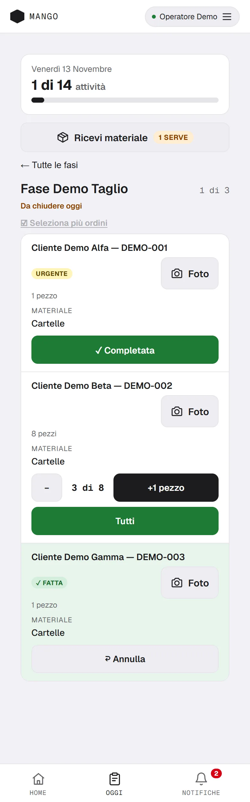
Puoi anche completare dalla scheda della fase (tocca il nome dell'ordine nella voce): trovi «Completa fase» e il pulsante «✓ Completata». Puoi scrivere una nota se vuoi («Le tue note (opzionale)»).
Completare più fasi insieme
- Dentro una fase con almeno due voci, tocca «☑ Seleziona più ordini».
- Spunta le voci che hai finito.
- In basso tocca «✓ Completa» con il numero delle voci scelte. Accanto c'è «Annulla» per lasciare la scelta.
- Per uscire dalla scelta tocca «✕ Esci dalla selezione».
- Vedi per esempio «3 completate!».
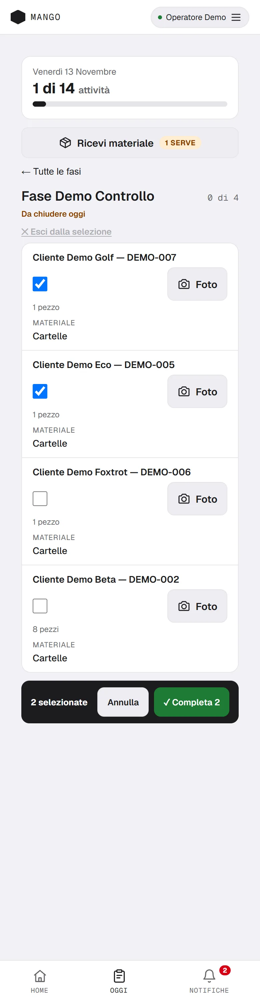
Questa scelta non è per le voci con più pressate e per le spedizioni: quelle si segnano una alla volta.
«+1 pezzo»
Su alcune fasi la voce mostra il conteggio dei pezzi, per esempio «3 di 8».
- Ogni volta che finisci un pezzo tocca «+1 pezzo».
- Se hai sbagliato, tocca «−» per togliere un pezzo.
- Se hai finito tutto, tocca «Tutti».
- Quando arrivi all'ultimo pezzo la fase si completa da sola. Vedi «Tutti i pezzi fatti!».
Pressate
Alcune fasi richiedono più pressate. Quando completi vedi la domanda «È l'ultima pressata?».
- «Sì, ho finito»: la fase è completata.
- «No, ne serve un'altra»: la fase resta da fare. Vedi «Pressata registrata: la fase resta da fare».
- «Annulla»: non succede niente.
Le pressate già fatte compaiono come «2 pressate già fatte» (è solo un conteggio).
Spedizione unica
Se più ordini partono insieme, vedi «Si chiude per tutta la spedizione». Completando uno, si completano tutti. Se un ordine del gruppo non è pronto, a schermo resta il titolo «Spedizione chiusa» con il pulsante «Ho capito».
«Annulla» (se hai completato per sbaglio)
- Subito dopo il completamento, sulla voce verde compare «↩ Annulla».
- Toccalo. Vedi «Completamento annullato». La voce torna da fare.
- «Annulla» vale solo per poco tempo dopo il completamento. Poi sparisce.
- Se è passato troppo tempo vedi «Non si può più annullare: chiedi al responsabile». Solo il responsabile può riaprire la fase.
Errori comuni
- «Non disponibile offline» per «+1 pezzo», «Annulla» e il completamento di più voci: servono internet.
- «Prima va completata una fase precedente»: la fase è bloccata. Guarda «dopo: …».
- «L'ordine è sospeso: contatta il responsabile».
- «Era già completata»: l'ha già segnata un collega.
5. Fasi esterne e materiale in arrivo
Alcuni lavori vanno da un fornitore. Tu segni quando il pezzo parte e quando il materiale o il pezzo torna.
Spedire un pezzo al fornitore
- In «Oggi» trovi la voce con il pulsante «Segna spedita». Compare solo quando le fasi prima sono finite.
- Toccalo. L'app chiede due conferme: «Confermi la spedizione al fornitore? Verrà registrata la data di uscita.» e «Confermi di aver spedito questo pezzo?»
- Vedi «Spedizione registrata!».
Dalla scheda della fase trovi lo stesso con «Segna come spedito».
Confermare che arriva il materiale o il pezzo
- In «Oggi» tocca «Ricevi materiale».
- Vedi l'elenco. «Serve per lavorare» è ciò che blocca altro lavoro. «Altro in arrivo» è il resto.
- Puoi cercare con «Cerca cliente o codice ordine…».
- Quando il materiale è arrivato, tocca il pulsante verde «✓ Conferma arrivo» con il nome del materiale. Per un pezzo che torna dal fornitore è «✓ Conferma rientro».
- L'app chiede «Confermi che è arrivato il materiale …?» Rispondi di sì. Per il materiale può chiederti anche «Confermi di aver ricevuto davvero il materiale per questo pezzo?»
- La voce sparisce dall'elenco. Le fasi che aspettavano entrano in «Oggi».
- Per tornare tocca «← Oggi».
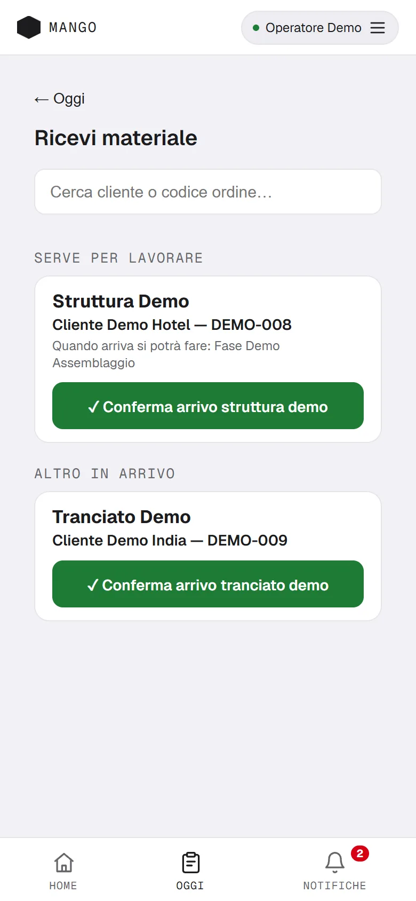
Dalla scheda di una fase d'attesa trovi anche «Conferma ricezione» e «Conferma ricezione pezzo».
Errori comuni
- «Serve la connessione per confermare»: aspetta di avere internet.
- «Nessuna ricezione in attesa»: non c'è niente da ricevere.
- «Ricezione già confermata»: l'ha già fatto un collega.
6. Ordine pronto: spedito o ritirato
Quando tutte le fasi sono finite, l'ordine passa in «In attesa corriere». Tu segni quando parte o quando il cliente lo ritira.
Un ordine
- Dalla Home apri l'ordine che sta nel gruppo «In attesa corriere».
- Tocca «Segna come spedito». Se il cliente ritira, il pulsante è «Segna come ritirato».
- L'app chiede «Segnare questo ordine come spedito?» (o «…come ritirato?»). Conferma.
- Vedi «Ordine spedito!» (o «Ordine ritirato!») e torni alla Home.
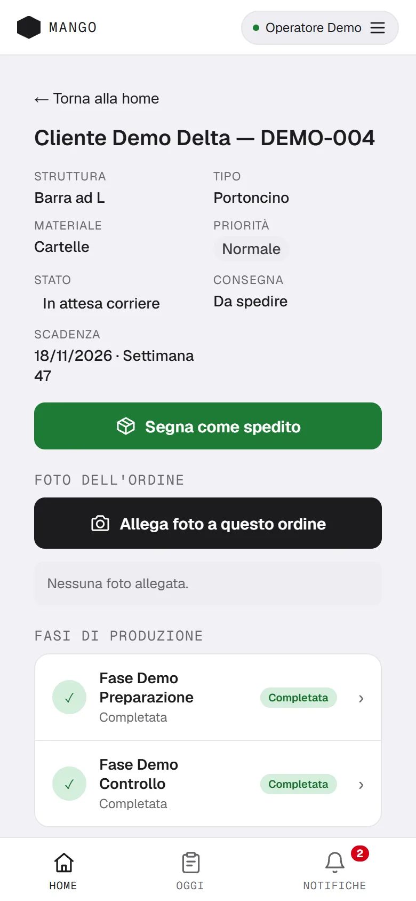
Se l'ordine è in una spedizione unica, l'app propone di segnare tutti gli ordini pronti insieme («Spedisci tutti» o «Ritira tutti») oppure «Solo questo».
Più ordini insieme
- Nella Home, nel gruppo «In attesa corriere», tocca «☑ Seleziona più ordini».
- Spunta gli ordini che partono.
- In basso leggi per esempio «2 selezionati». Tocca «Spedisci».
- L'app chiede «Segnare come spediti 2 ordini? L'azione è irreversibile.» Conferma.
- Per rinunciare tocca «Annulla» in basso o «✕ Annulla» in alto.
Errori comuni
- «Non disponibile offline»: serve internet.
- «Seleziona almeno un ordine da spedire».
- Dopo il «Sì» non si torna indietro da solo: se sbagli, avvisa il responsabile.
7. Foto dell'ordine
Puoi aggiungere foto a un ordine per mostrare un lavoro o un problema. Le vedono tutti quelli che lavorano sull'ordine.
- Apri l'ordine dalla Home. Trovi «Foto dell'ordine».
- Tocca «Allega foto a questo ordine».
- Scegli «Scatta foto» o «Allega da galleria».
- Con «Scatta foto» si apre la fotocamera dell'app: puoi fare più scatti. Poi tocca «Carica tutte».
- Con «Allega da galleria» scegli le foto e tocca «Carica foto».
- Vedi per esempio «2 foto caricate».
- Per vedere una foto più grande, toccala.
Dalla schermata «Oggi» il pulsante «Foto» sulla voce ti porta allo stesso ordine.
Eliminare una foto. Tocca «Seleziona», scegli le foto e tocca «Elimina selezionate»; l'app chiede conferma.
Errori comuni
- «Per allegare foto serve la connessione»: le foto non si salvano senza internet.
- «Ordine già spedito: non si possono più allegare foto».
- «Fotocamera non disponibile: le foto andranno nella galleria del telefono»: permetti l'uso della fotocamera, oppure usa «Allega da galleria».
- «Scatto non riuscito, riprova».
8. Notifiche
Le notifiche ti avvisano di cose importanti: per esempio un ordine sospeso, in ritardo o pronto da spedire.
- In basso tocca «Notifiche». Un numero rosso sull'icona dice quante non hai ancora letto.
- Le notifiche nuove hanno lo sfondo giallo e il testo in grassetto.
- Per segnarle tutte come lette tocca «Segna tutte lette».
- Vedi «Tutte le notifiche segnate come lette».
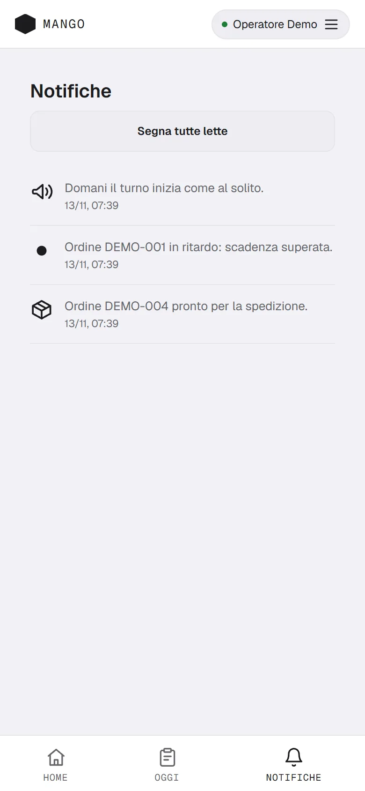
Chi esegue un'azione non riceve la notifica di quella stessa azione.
Per ricevere gli avvisi anche fuori dall'app, consenti le notifiche quando il telefono lo chiede.
Errori comuni
- «Nessuna notifica»: non c'è niente di nuovo.
- «Errore: notifiche non aggiornate, riprova»: controlla internet e riprova.
9. Il mio profilo
Qui vedi e correggi i tuoi dati, chiedi ferie o permessi, vedi chi è assente e cambi il PIN.
Aprire il profilo
- Tocca il tuo nome con l'icona del menu, in alto a destra.
- Sotto «Il mio profilo» scegli: «I miei dati», «Richieste», «Assenze squadra» o «Cambia PIN».
- Per tornare alla Home tocca la freccia «‹» in alto.
I miei dati
I dati che ti chiede il responsabile (per esempio le taglie). Li vedi solo tu e il responsabile.
- Scrivi o scegli i valori.
- Tocca «Salva». Vedi «Dati salvati».
Se non c'è niente da compilare vedi «Nessun dato richiesto per ora».
Richieste (ferie e permessi)
- Apri «Richieste». Sotto «Nuova richiesta» scegli il «Tipo».
- Scegli «Dal» e «Al». Per i permessi a ore scegli il «Giorno» e l'orario «Dalle» e «Alle».
- Se vuoi, scrivi una «Nota (facoltativa)». Non scrivere informazioni sulla salute.
- Tocca «Invia richiesta». Vedi «Richiesta inviata al responsabile».
- Sotto «Le mie richieste» vedi lo stato: «In attesa», «Approvata», «Non approvata» o «Annullata».
- Finché è «In attesa» puoi toccare «Annulla richiesta» e confermare.
Assenze squadra
Vedi le assenze approvate dei colleghi nelle prossime 4 settimane.
Cambiare il PIN
- Apri «Cambia PIN».
- Scrivi il «PIN attuale».
- Scrivi il «Nuovo PIN» di 6 cifre (valgono le regole della sezione 1).
- Scrivi «Conferma il nuovo PIN».
- Vedi «PIN cambiato. Dal prossimo accesso usa il nuovo PIN.»
Tema chiaro o scuro
Nel menu, sotto «Aspetto», scegli «Chiaro», «Scuro» o «Automatico».
Errori comuni
- «PIN attuale errato».
- «Serve la connessione a internet» quando salvi i dati.
- Richiesta rifiutata per poco anticipo: l'app indica il preavviso minimo.
- «Nota troppo lunga (massimo 300 caratteri)».
10. Senza rete
Se il telefono perde internet, puoi continuare a vedere l'ultimo piano e a completare le fasi. Il lavoro si invia quando torna la rete.
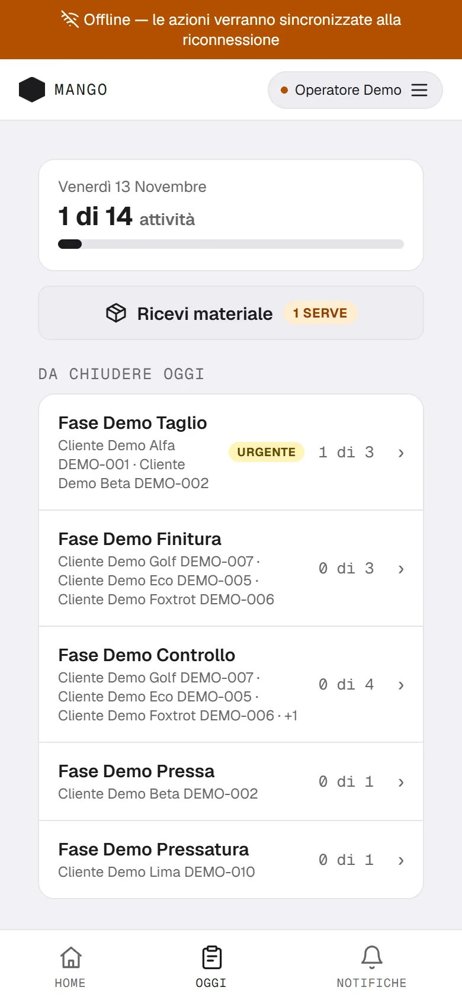
Cosa succede
- In alto compare una banda gialla: «Offline — le azioni verranno sincronizzate alla riconnessione».
- In «Oggi» vedi l'ultimo piano ricevuto.
Cosa funziona
- Vedere l'ultimo piano e l'ultimo elenco ordini.
- Completare una fase con «✓ Completata». Vedi «Salvato offline — sarà sincronizzato alla riconnessione».
- In Home compare il numero delle «azioni in coda offline».
Cosa non funziona
- «+1 pezzo», «Annulla», completare più voci insieme.
- Segnare spedita, spedito o ritirato un ordine.
- Confermare un arrivo di materiale.
- Allegare foto e inviare richieste.
Quando torna la rete
L'app invia da sola il lavoro in coda. Vedi «Sincronizzazione 2 azione(i)…» e poi «Sincronizzazione completata».
Errori comuni
- «Impossibile verificare il PIN offline. Connettiti per il primo accesso.»: serve internet almeno una volta.
- «Azione NON salvata: la memoria del telefono non risponde. Riprova tra un momento.»: riprova.
11. Messaggi speciali
«Aggiorna l'app»
- A tutto schermo vedi «Aggiorna l'app» e «Questa versione non è più supportata. Tocca il pulsante per caricare quella nuova.»
- Tocca «Aggiorna ora».
- Se il messaggio torna, avvisa il responsabile.
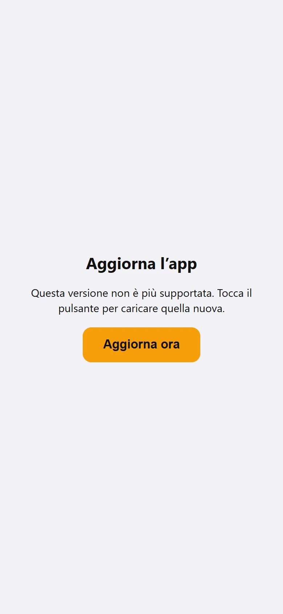
Banda rossa «AMBIENTE DI TEST»
In alto vedi una banda rossa con la scritta «AMBIENTE DI TEST — NON È PRODUZIONE». A volte aggiunge l'ora in cui scade. Se la vedi, avvisa il responsabile e non usare l'app.
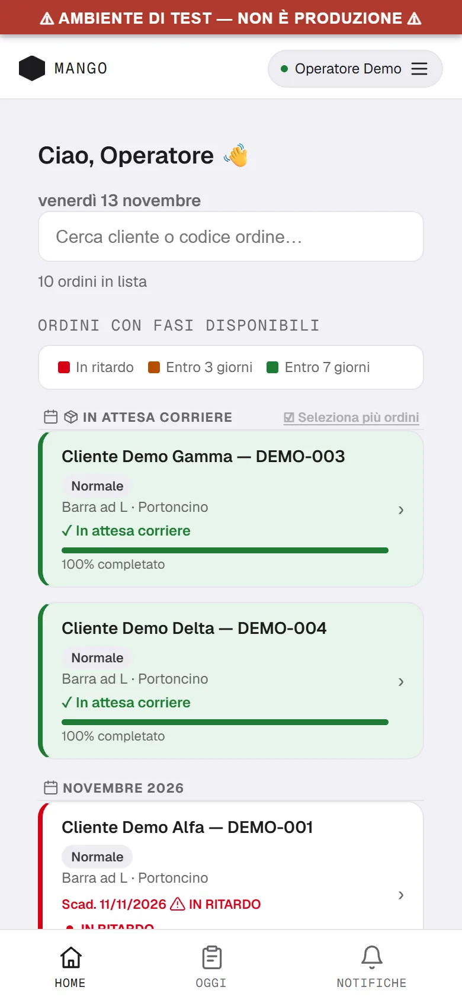
Sessione scaduta
Vedi «Sessione scaduta — effettua di nuovo l'accesso». Dopo poco torni alla schermata di accesso: scegli il nome e scrivi il PIN. Può succedere anche se il responsabile ti ha fatto uscire: entra di nuovo.
Altri messaggi
- «Telefono da autorizzare», «Telefono non più autorizzato»: vedi sezione 1.
- «Non aggiornato — ultimo piano ricevuto.» in «Oggi»: il piano mostrato è l'ultimo ricevuto. Controlla internet.
- «Non sono riuscito a salvare, riprova.»: riprova tra poco.
12. Altre voci che puoi trovare
Alcune cose compaiono solo su certi ordini. Qui trovi cosa vuol dire ciascuna e cosa devi fare.
- Fase abbinata. Due fasi dello stesso ordine possono comparire insieme in «Oggi». Restano due fasi: le completi una per una, nell'ordine che vuoi.
- Ordine extra. Nella Home l'ordine ha la scritta «Ordine Extra». Apri l'ordine e completa le sue fasi come le altre.
- Lavorazioni aggiuntive. Nel dettaglio dell'ordine, sotto le fasi, può esserci l'elenco «Lavorazioni aggiuntive», con il segno «AGG». Si aprono e si completano come le altre fasi.
- Consegna. Nel dettaglio dell'ordine, sotto «Consegna», leggi come parte l'ordine: «Da spedire», «Ritira il cliente», «Cliente da avvisare», «Pedana richiesta dal cliente» o «Ritira il cliente (senza pedana)». Se è «Ritira il cliente», alla fine tocchi «Segna come ritirato».
- Note. Se l'ordine ha una nota, la trovi nel dettaglio dell'ordine («Note») e dentro ogni fase («Note ordine»). Se è lunga, tocca «Mostra tutto» per leggerla.
13. Domande frequenti
Ho dimenticato il PIN.
Chiedi al responsabile. Poi scegli un PIN nuovo con le regole della sezione 1.
Ho perso il telefono o ne ho uno nuovo.
Chiedi al responsabile. Il nuovo telefono deve essere approvato da lui (sezione 1).
Ho completato la fase sbagliata.
Subito dopo, in «Oggi», tocca «↩ Annulla» sulla voce. Se «Annulla» non c'è più, chiedi al responsabile: solo lui può riaprire la fase.
Non vedo una fase.
- Se la voce è in «In arrivo» con «dopo: …», aspetta la fase indicata.
- Se la fase aspetta il materiale, guarda «Ricevi materiale».
- Se l'ordine è «SOSPESO», chiedi al responsabile.
- Se non c'è proprio, può non essere nel piano di oggi: apri l'ordine dalla Home e guarda le sue fasi.
Il piano di oggi non c'è.
Leggi il messaggio in «Oggi»: «Il piano di oggi non è ancora pronto: viene creato all'inizio del turno.» oppure «Oggi non è un giorno lavorativo.»
L'app non si apre.
- Controlla internet.
- Chiudi l'app e riaprila.
- Se vedi «Aggiorna l'app», tocca «Aggiorna ora».
- Se non funziona, chiedi al responsabile.